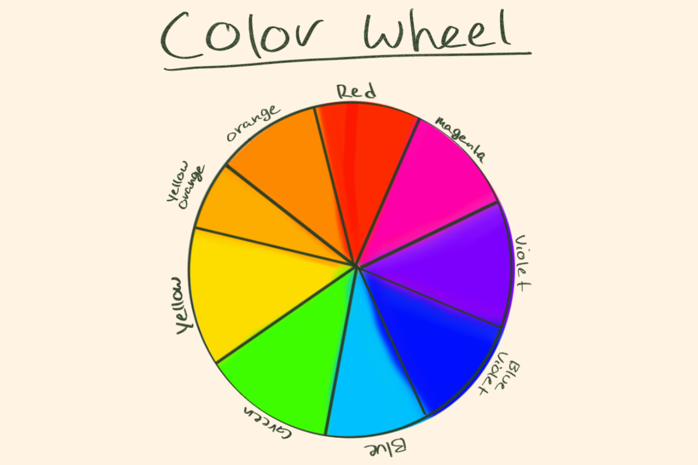

Color Theory
Color plays an important role in art. It can create mood, establish atmosphere, and help guide the viewer's attention throughout a drawing. Understanding some basic color theory can help you make more thoughtful decisions when creating your artwork.
Understanding the Color Wheel
The color wheel is a tool artists use to understand relationships between colors. In the traditional red-yellow-blue color model, colors are divided into three main categories:
- Primary Colors: Red, yellow, and blue. These form the foundation of the traditional artist's color wheel.
- Secondary Colors: Orange, green, and purple. These are traditionally created by mixing two primary colors.
- Tertiary Colors: Colors created by mixing a primary color with a neighboring secondary color, such as red-orange or blue-green.
Keep in mind that digital screens use red, green, and blue (RGB) light to produce colors, which works differently from the traditional artist's color wheel.

Warm and Cool Colors
Colors are often described as warm or cool depending on the feelings and associations they create.
- Warm Colors: Reds, oranges, and yellows are often associated with warmth, energy, and excitement.
- Cool Colors: Blues, greens, and purples are often associated with calmness, distance, and peacefulness.
Artists can use warm and cool colors together to create contrast and visual interest. These categories are flexible, and the surrounding colors can influence whether a particular color feels warm or cool.
Color Harmony
Color harmony refers to how different colors work together in an artwork. Choosing colors with an intentional relationship can help create a more unified composition.
- Complementary Colors: Colors positioned opposite each other on the color wheel, such as blue and orange or red and green.
- Analogous Colors: Colors positioned next to each other on the color wheel, such as blue, blue-green, and green.
- Monochromatic Colors: Different values and variations of a single color.
Experimenting with these combinations can help you discover interesting color palettes for your drawings.
Practice: Create a Color Palette
A simple way to practice color theory is to create a small collection of colors and use them in a drawing.
- Choose a color you enjoy using.
- Find its complementary color on the color wheel.
- Create a palette using those colors along with lighter and darker values.
- Draw a simple object using your palette.
Try repeating the exercise using analogous or monochromatic colors. Notice how changing the palette can affect the mood and appearance of your drawing.